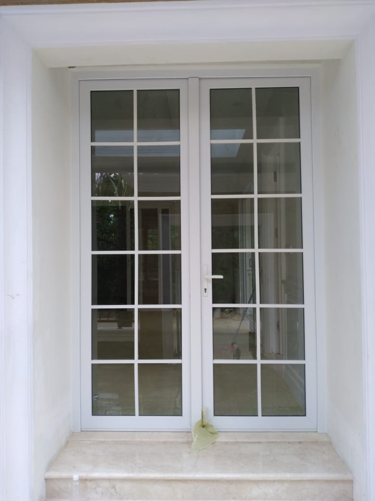

Membantu meneruskan cahaya
Bidang kaca dapat membawa cahaya alami antarruang sesuai tata letak. Dampak pada terang dan privasi mengikuti pilihan kaca serta kondisi ruang.
Pintu UPVC swing kaca memiliki daun berengsel dengan bidang kaca. Cahaya alami dapat melewati kaca dan menghubungkan ruang, bergantung pada posisi pintu serta pilihan kaca. Karena kaca ikut bergerak bersama daun, ukuran, bobot, jenis kaca, engsel, dan pengunci perlu dipertimbangkan bersama. Spesifikasi kaca tidak diasumsikan di halaman ini; konfirmasikan untuk bukaan dan kebutuhan ruang Anda sebelum memesan.

Bidang kaca dapat meneruskan cahaya alami dan membantu ruang terhubung terasa lebih terang. Istilah pintu kaca UPVC juga digunakan untuk mencari model berpanel kaca seperti ini. Hasil pencahayaan bergantung pada orientasi, bukaan lain, kondisi sekitar, dan jenis kaca. Pertimbangkan privasi bila pintu menghadap koridor atau area ramai.
Daun tetap berayun pada engsel, sehingga ruang bebas tetap diperlukan. Rencanakan cahaya, akses, dan jalur ayun bersamaan.
Model ini menggabungkan akses ayun dengan bidang transparan; setiap konfigurasi perlu diperiksa.
Bidang kaca dapat membawa cahaya alami antarruang sesuai tata letak. Dampak pada terang dan privasi mengikuti pilihan kaca serta kondisi ruang.
Daun membuka melalui gerak ayun dan perlu jalur bebas. Arah bukaan harus mempertimbangkan lalu lintas orang dan benda di kedua sisi pintu.
Dimensi dan bobot daun berhubungan dengan engsel serta penguncian. Minta kecocokan komponen dikonfirmasi oleh penyedia sebelum produksi.
Pintu swing kaca dapat dipertimbangkan untuk akses antarruang yang memerlukan cahaya, setelah privasi dan kondisi bukaan dinilai. Pastikan daun tidak mengenai dinding, furnitur, orang, atau pintu lain. Jalur lalu lintas dan pegangan juga harus bebas.
Mintalah rincian jenis kaca, kecocokan dengan ukuran daun, penopangan, serta cara pemasangan secara tertulis. Bahas benturan, keselamatan, cuaca, dan akses pembersihan sesuai lokasi; jangan menyimpulkan spesifikasi dari foto atau menganggap ada jaminan ketahanan.
Evan UPVC memiliki workshop di Bekasi dan melayani permintaan di Indonesia. Survei dan pemasangan bergantung lokasi serta cakupan kerja; sebutkan alamat proyek saat konsultasi.
Konfigurasi dan opsi final hanya ditetapkan setelah diperiksa serta disetujui.
| Aspek | Informasi |
|---|---|
| Mekanisme | Daun berayun pada engsel; arah bukaan dibahas sesuai lokasi. |
| Ukuran | Ditentukan melalui pengukuran dan dicatat pada penawaran. |
| Warna dan finishing | Pilihan aktual dikonfirmasi sebelum persetujuan. |
| Kaca | Jenis serta rincian kaca harus dipilih dan dikonfirmasi untuk kebutuhan proyek. |
| Perangkat dan aksesori | Engsel, pegangan, dan pengunci harus sesuai dengan konfigurasi daun. |
Minta spesifikasi kaca dan perangkat, ukuran, harga, lingkup pemasangan, jadwal, serta ketentuan tertulis. Pastikan daftar tersebut menjelaskan produk yang benar-benar akan dibuat, bukan hanya contoh tampilan.
Gunakan pegangan dan gerakkan daun tanpa hentakan. Jangan mendorong kaca atau membiarkan pintu membanting. Pastikan ruang ayun kosong. Bila daun seret, turun, bergetar, atau sulit dikunci, jangan dipaksa dan minta pemeriksaan.
Bersihkan kaca dan bingkai dengan kain lembut serta bahan yang sesuai. Hindari benda tajam dan tekanan pada tepi kaca; jaga engsel dan pengunci bersih. Ikuti petunjuk perawatan pesanan.
Swing kaca meneruskan cahaya dan berayun; swing panel lebih tertutup; sliding bergerak pada jalur. Bandingkan privasi, akses, serta ruang yang tersedia. Model tidak menentukan performa secara otomatis.
Periksa kecocokan kaca, bobot daun, dan perangkat pada konfigurasi tertulis.
Foto adalah contoh visual, bukan spesifikasi jenis kaca atau konfigurasi pesanan.

Bahas cahaya, privasi, ayun, dan kaca.
Jelaskan fungsi ruang, kebutuhan cahaya dan privasi, posisi pintu, serta kirim foto lokasi bila ada.
Periksa bukaan, arah ayun, kondisi lantai dan dinding, area bebas, serta akses pemasangan.
Tinjau ukuran, jenis kaca, perangkat, finishing, harga, cakupan kerja, jadwal, dan ketentuan tertulis.
Setelah detail disetujui, periksa gerak pintu, kaca, dan penguncian saat serah terima.
Kaca dapat meneruskan cahaya alami dan pandangan antarruang, bergantung pada tata letak serta pilihan kaca. Bahas privasi dan spesifikasi aktual.
Jenis, ketebalan, dan susunan kaca tidak ditetapkan di halaman ini. Minta rincian tertulis dan pastikan sesuai ukuran daun, ruang, serta perangkat.
Daun membutuhkan ruang bebas pada sisi ayun. Jauhkan furnitur, dinding penghalang, orang, dan pintu lain; periksa arah final saat survei.
Bobot daun berkaitan dengan kaca dan perangkat. Minta konfirmasi tertulis tentang kecocokan engsel, pegangan, dan pengunci; jangan mengandalkan foto.
Operasikan melalui pegangan tanpa hentakan. Bersihkan dengan kain lembut, hindari tekanan pada tepi kaca, dan minta pemeriksaan bila gerak atau pengunci berubah.
Diskusikan cahaya, privasi, dan lokasi; lanjutkan survei. Tinjau kaca, ukuran, arah ayun, perangkat, harga, cakupan, serta jadwal sebelum menyetujui penawaran.
Bandingkan model pintu dan pilihan jendela untuk kebutuhan cahaya serta akses.
Sampaikan kebutuhan cahaya, privasi, dan kondisi lokasi kepada tim Evan UPVC.